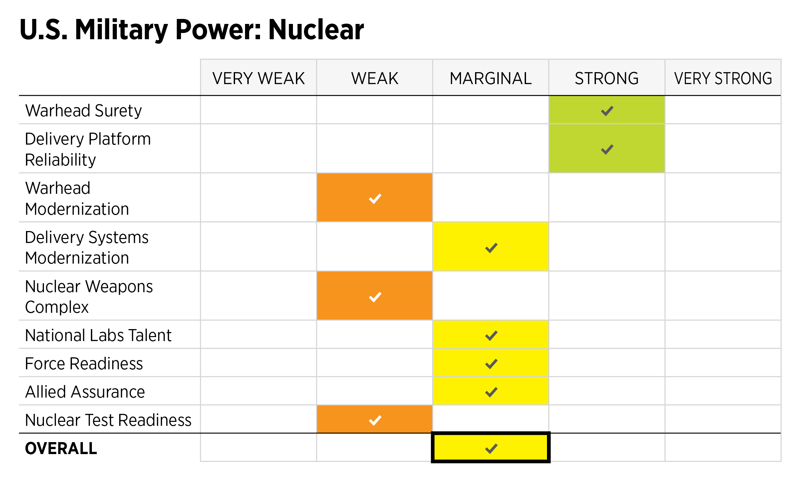

The United States was the first country to manufacture nuclear weapons, with help from the United Kingdom, Canada and Australia, and is the only country to have used them in combat, with the separate bombings of Hiroshima and Nagasaki in World War II. Between 1940 and 1996, the U.S. government spent at least $8.89 trillion in present-day terms on nuclear weapons, including platforms development (aircraft, rockets and facilities), command and control, maintenance, waste management and administrative costs. It is estimated that, since 1945, the United States produced more than 70,000 nuclear warheads, which is more than all other nuclear weapon states combined The United States is one of the five recognized nuclear powers by the signatories of the Treaty on the Non-Proliferation of Nuclear Weapons (NPT). As of 2017, the US has an estimated 4,018 nuclear weapons in either deployment or storage. This figure compares to a peak of 31,225 total warheads in 1967 and 22,217 in 1989, and does not include "several thousand" warheads that have been retired and scheduled for dismantlement.
